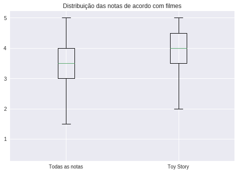
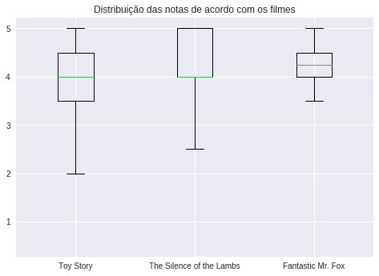

Comparação de dois conjuntos de amostras

um gráfico comparativo mostrando que "Toy Story" tem notas melhores que a média geral destacaria
a excepcionalidade desse filme em relação aos demais, seja em termos de qualidade, popularidade
ou impacto nas avaliações gerais de filmes.
Comparação da média de dois filmes

esse gráfico permitiria visualizar claramente as diferenças nas médias de notas entre os filmes,
além de mostrar a variabilidade das avaliações para cada um deles. "The Silence of the Lambs"
seria o filme com a média mais alta, seguido por "Fantastic Mr. Fox" e, por último, "Toy Story",
com uma distribuição mais ampla de notas.